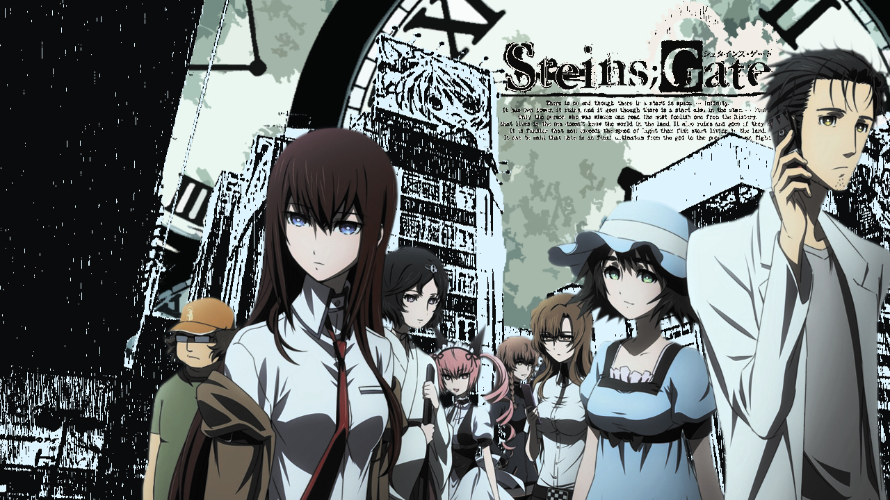
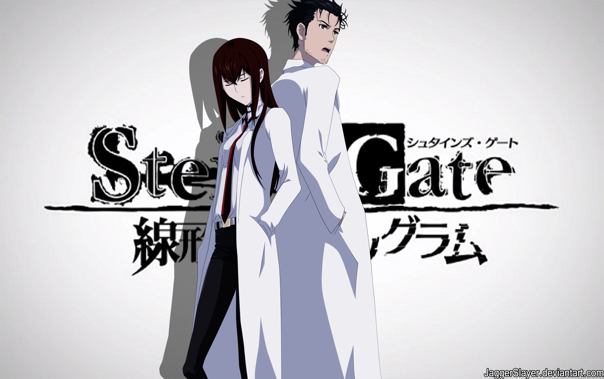

Steins;Gate Launches 10th Anniversary Project!

Steins;Gate has launched a teaser website confirming the start of a new project to celebrate the franchise’s 10th anniversary.
According to the teaser site, there will be 10 projects launched in celebration of the franchise’s 10th anniversary with further information to be announced at a later date.
Steins;Gate is a sci-fi adventure game series that takes place in Akihabara. It came out in 2009, and has has since evolved into a mixture of media projects beginning with a TV anime adaptation in 2011, which was followed by Steins;Gate: The Movie − Load Region of Déjà Vuin 2013. after which came the game’s sequel, Steins;Gate 0 in 2015.
